Coulissant
CoulissantSTRUGAL
↗S140RP INFINITY
Des profils discrets pour ouvrir les perspectives.
- Nœud central
- 25 mm
- Cadre
- 137 mm
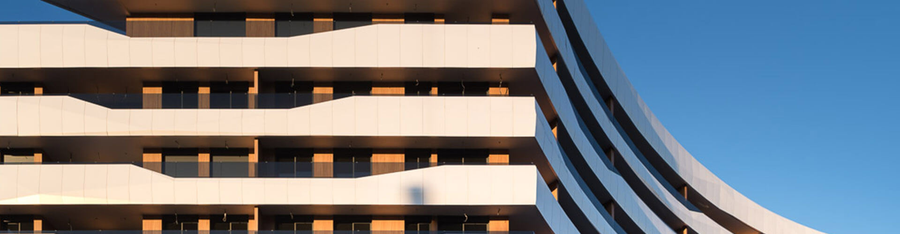
Menuiseries, façades & protection solaire
Profilés, extrusion & transformation

Fenêtres & portes pour votre quotidien
Une fenêtre ouvre bien plus qu’un espace. Elle laisse entrer la lumière, dessine une perspective et transforme notre façon d’habiter.
Depuis 1975, STRUGAL conçoit des solutions pour la construction et l’industrie. Au Maroc, nous accompagnons les professionnels et les particuliers pour donner forme à leurs projets.
Découvrez le groupe ↗ans d’expérience
pays de présence
professionnels engagés
De l’enveloppe du bâtiment aux détails de l’aménagement intérieur. Explorez les familles STRUGAL et trouvez le système adapté à votre projet.
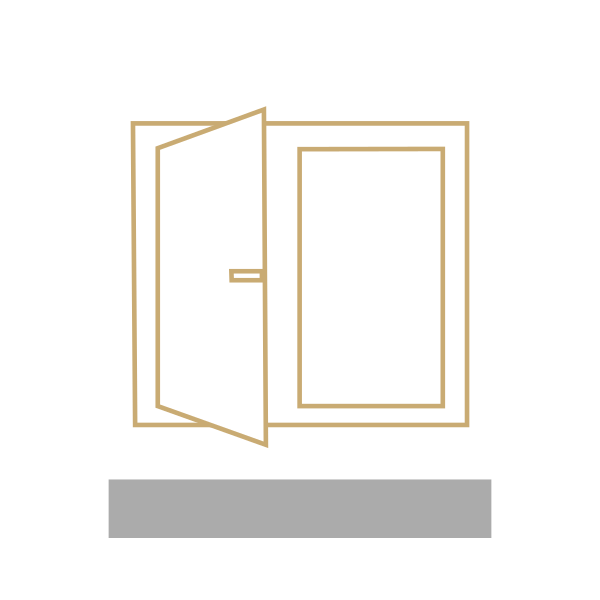
Ouvertures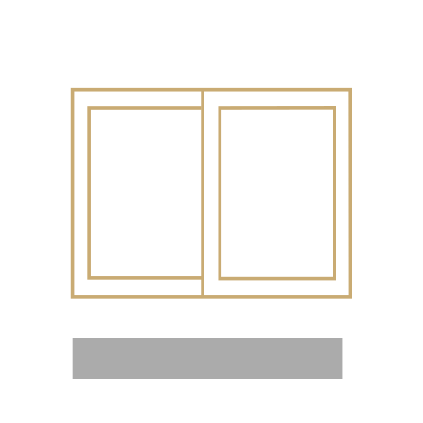
Ouvertures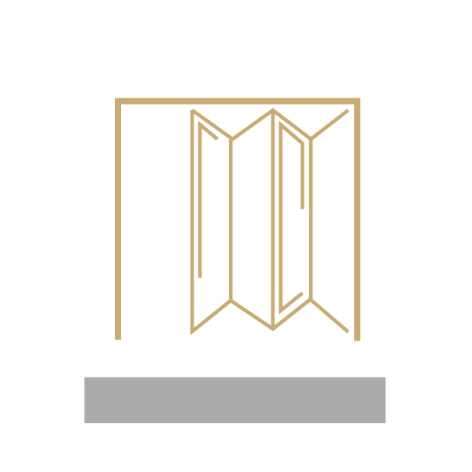
Ouvertures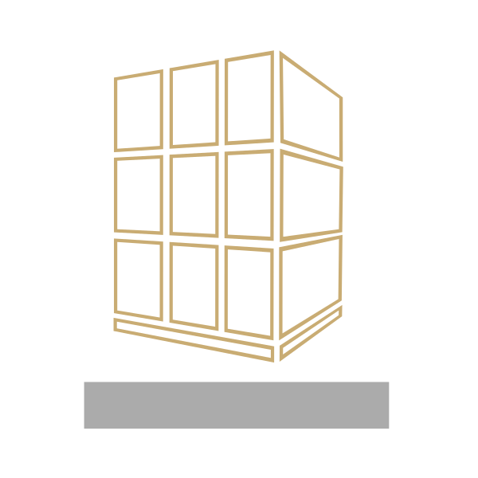
Enveloppe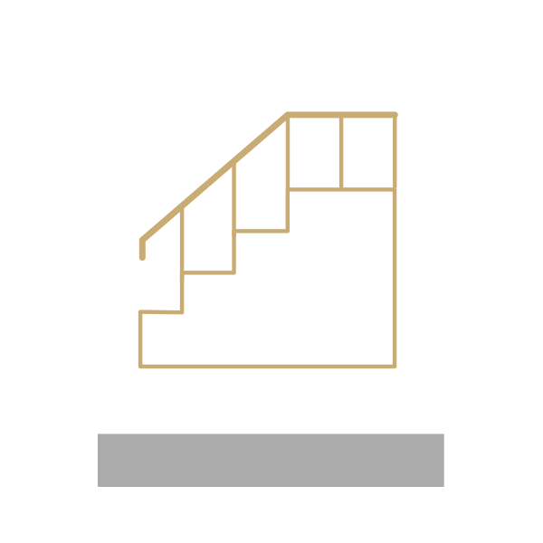
Enveloppe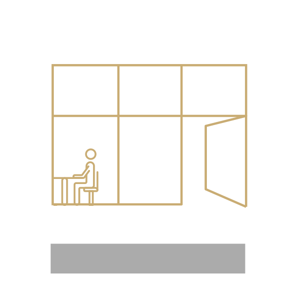
Intérieurs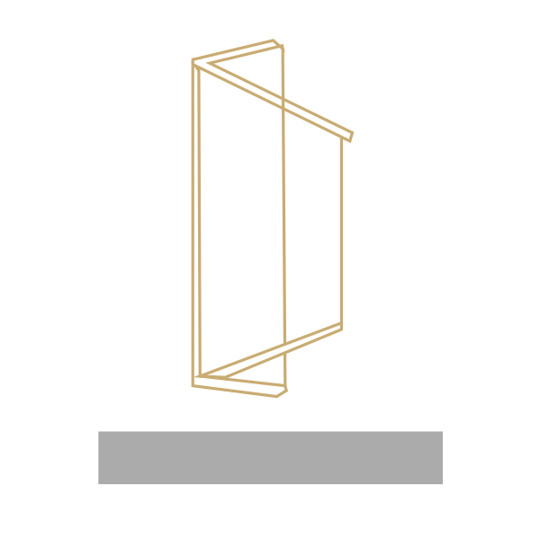
Ouvertures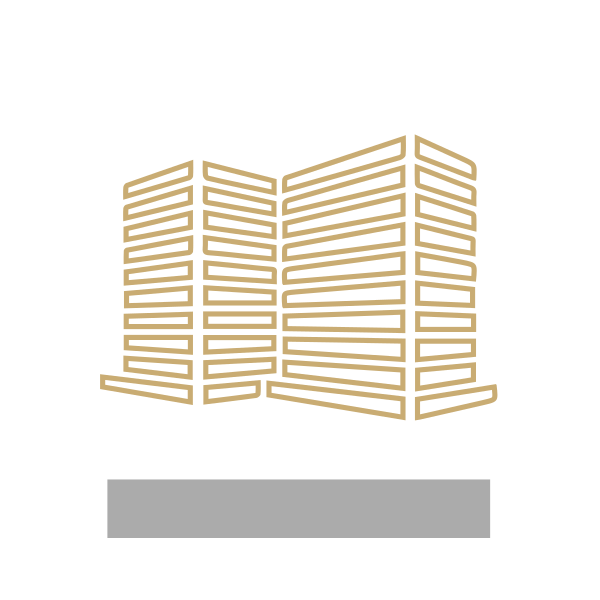
Enveloppe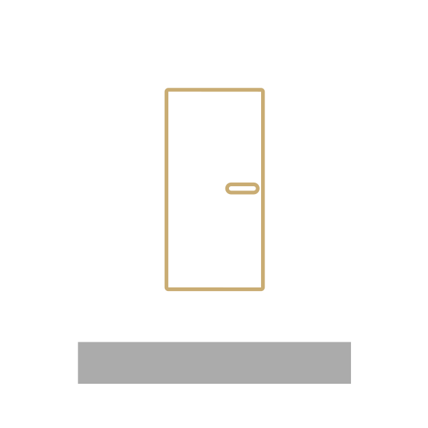
Intérieurs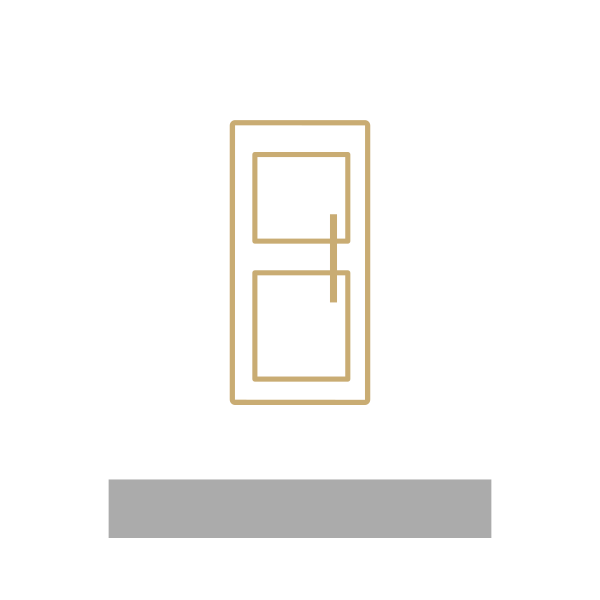
Ouvertures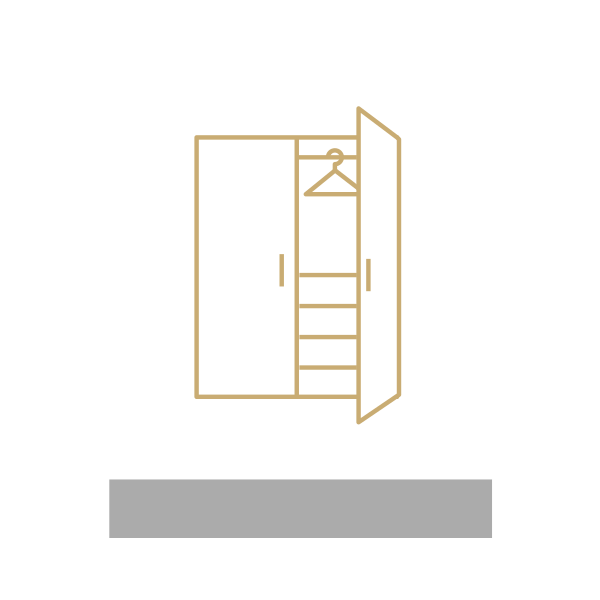
Intérieurs12 familles de produits
Également dans la gamme : profils complémentaires, ferrures et accessoires↗CoulissantDes profils discrets pour ouvrir les perspectives.
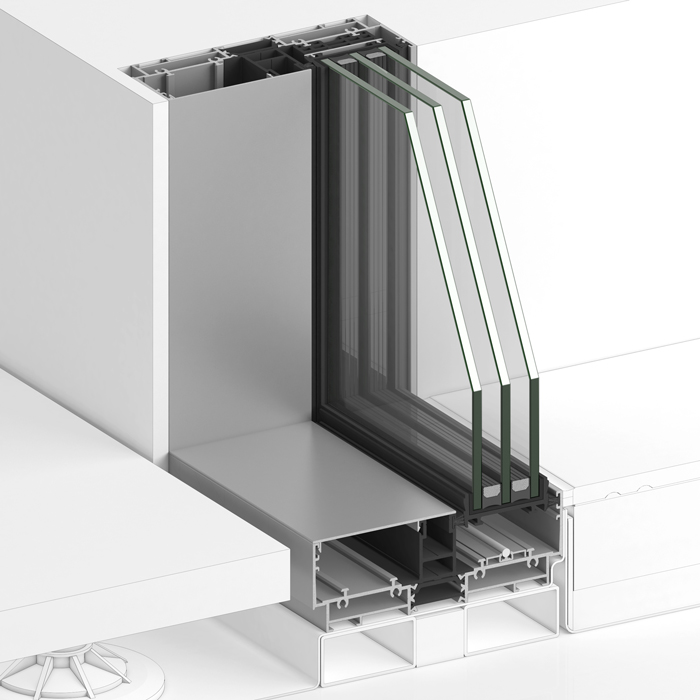
CoulissantUne baie minimaliste pour les grandes ouvertures.
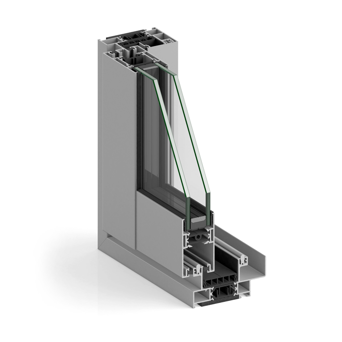
CoulissantPlusieurs modes d’ouverture dans une même gamme.
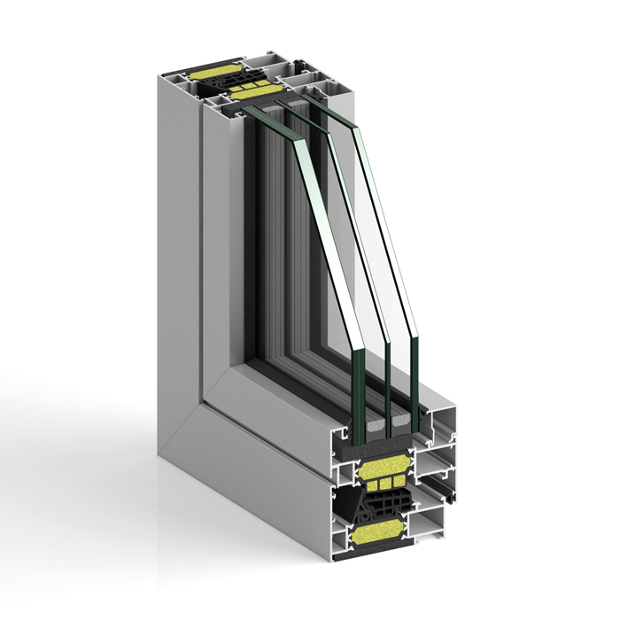
FrappeUn cadre de 82 mm pour les projets exigeants.
 Frappe
FrappeUn cadre de 74 mm, à ouvrant apparent ou caché.
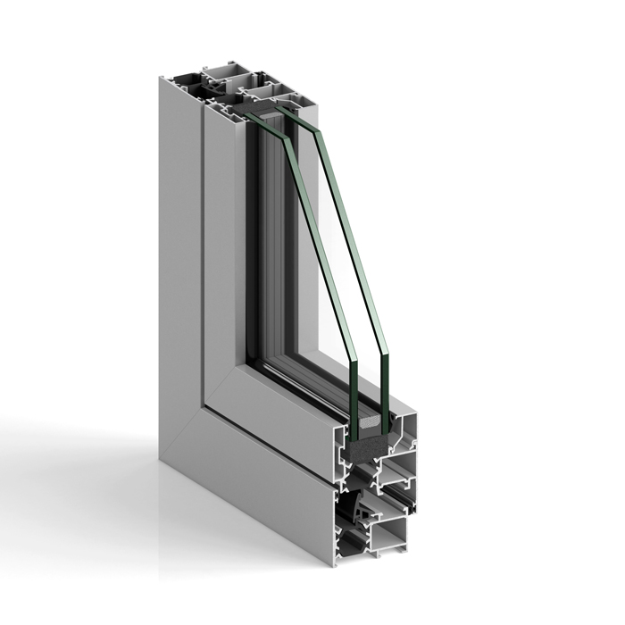
FrappeUne solution à frappe aux cadres de 53 ou 60 mm.
6 gammes à explorer
Un premier repère pour préparer votre échange avec le bureau technique.
| Système | Ouverture | Repère technique | À étudier pour |
|---|---|---|---|
| S140RP INFINITY | Coulissant | Nœud central : 25 mm | Pour privilégier la transparence et des lignes minimales. |
| S160RP HORIZON | Coulissant | Hauteur : Jusqu’à 4 m | Pour étudier de grands espaces vitrés avec le bureau technique. |
| S88RP | Coulissant | Montant central : 34 mm | Pour comparer coulissant classique, levant et galandage. |
| S82RP | Frappe | Cadre : 82 mm | Pour étudier une menuiserie à frappe avec isolation renforcée. |
| S74RP | Frappe | Cadre : 74 mm | Pour concilier lignes droites et choix de configurations. |
| S53RP+ | Frappe | Cadre : 53 / 60 mm | Pour étudier fenêtres et portes à lignes droites. |
Les performances et possibilités varient selon la configuration. Consultez les fiches techniques et faites valider votre projet.
Les bonnes ressources, les bons outils,
les bonnes personnes. À chaque étape.
Choix des systèmes, calculs de résistance, études thermiques et accompagnement sur chantier.
Consulter le bureau technique ↗02Intégrez les objets numériques des systèmes STRUGAL à vos projets d’architecture.
Accéder aux ressources BIM ↗03Développez vos connaissances des systèmes et des méthodes de mise en œuvre.
Découvrir les formations ↗04Préparez vos devis et accompagnez la gestion de vos commandes.
Explorer les outils ↗05Un accompagnement qui relie conception, fabrication, transformation et distribution.
Découvrir le service ↗06Échangez avec les équipes STRUGAL pour orienter votre projet et trouver vos interlocuteurs.
Trouver un interlocuteur ↗STRUGAL accompagne aussi l’industrie : conception de profilés sur mesure, extrusion, finitions, usinage et distribution. Un savoir-faire qui va de la matière à la pièce finie.
Explorer les solutions industrielles ↗RÉFÉRENCES AU MAROC
Des projets réels, des systèmes identifiés,
des regards architecturaux différents.
Des matériaux durables, une politique de recyclage et des systèmes pensés pour l’efficacité énergétique : notre engagement se traduit dans les espaces que nous contribuons à créer.
Nos engagements ↗RENCONTRONS-NOUS AU MAROC
Choisissez une ville pour trouver un showroom ou un distributeur et préparer votre visite.
Coordonnées publiées par STRUGAL. Appelez avant de vous déplacer pour confirmer les disponibilités.
Une idée, une question, un projet ?
Échangez avec les équipes STRUGAL Maroc.